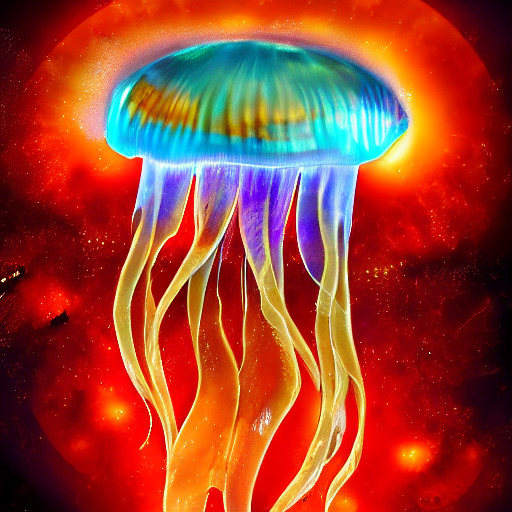

It took me a while to learn to perform well when competing. Performance for me mostly came in the shape of a racket sports competition at the time. But, it's been the same for other things too (music, work, sports, etc). In college I was able to come up with 3 rules for performing:
This model has helped me a lot not just in racket sports competitions but also in life.
--------------Thanks for reading, PDG
Livebook Smart Cell Text-to-image Stable Diffusion (v1.4) Huggingface Prompt: jellyfish,digital art